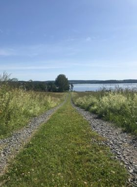

MY WORK
In this section, I am planning to add school projects and information. As of now I have added some basic information about places where I have lived and things that I love.
Click for larger images and more information




My goal is to have a key-role in developing and analyzing future financial web-platforms and solutions
I am a student at Mediainstitutet in Stockholm, Sweden. Having spent almost 19 years working with Corporate actions at Handelsbanken I am hoping to update my skill-set with Digital Analytics. Many years ago I had the opportunity to work in Vietnam for an American Research Company (ACNielsen). Since then I have developed a keen interest in data-analysis and I have longed to learn and improve my skills in this area. I aim to work with Digital Analytics in the financial market where my previous background and skills will come in handy.
Magdalena Gryth
Im really good at:
Google Analytics
Web Design
Corporate Actions
In this section, I am planning to add school projects and information. As of now I have added some basic information about places where I have lived and things that I love.
Click for larger images and more information
I'd love your feedback!

Swing by for a cup of , or leave me a note: